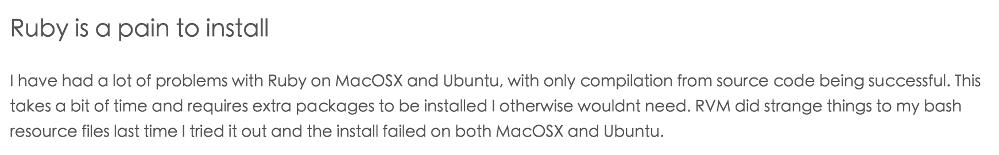

Hello, World
Apr 13, 2016
为什么写博客
最开始想写写博客可能已经是很久很久之前的事情了，可能一直觉得，如果只是转载或者把一些别人学过的tutorials放在博客里面也没什么意思。其实还是不够自信吧。
现在终于想通了，成长是需要过程的，就把这里当做自己学习和成长的一个见证吧，也督促自己把学过的东西和学习思考的过程记录下来，不然每天折腾这个折腾那个，到时候全忘光了。加上最近心情不太好，也想沉下心来好好学习，抑制一下自己浮躁的情绪。
折腾
从开始折腾octopress到发现osx ei capitan上自带的ruby没有支持openssl,到想了各种办法(rvm等等),最后到折腾brew install gcc48卡住…终于暂时放弃了,先用hexo顶一阵吧。后面再尝试一下,try everything.
今天看到一篇文章 里面有这么一段话

感情这位老兄跟我一样深受其害哈哈
博客暂时会放在github pages上面，后面考虑买个godaddy的域名和服务器，貌似hexo到workpress和octopress的转换也是支持的。
现在对hexo的操作还不太熟练，比如怎么删除下面那个默认的教程文章。慢慢熟悉一下。
删除和修改已经发布的post我是暂时通过编辑(或删除)source目录下面的md文件来执行的, 猜测hexo的new命令只是生成md文件 然后generate的时候内部调用md的转换引擎转换成静态html 而不是按我原来想的 hexo new xxx, hexo edit xxx… 等有空了深入阅读一下。
宣小鱼 !
by 大狮